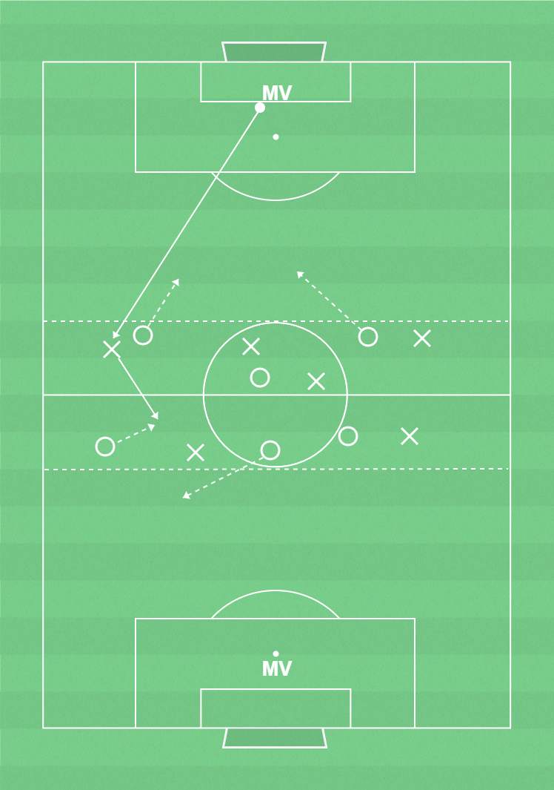

 ▶
▶
Kontring
Genom att snabbt bli spelbara när laget vinner bollen ökar lagets chanser att kontra för att komma till avslut och göra mål och för att behålla bollen inom laget.
Kontring:- Bollhållaren, ta bollen till ny yta, framåt om det går - annars bakåt. Tex genom att passa eller driva.- Medspelarna, bli snabbt spelbara båda framåt och bakåt när laget vinner bollen.
Målvakterna (kontring):- Starta kontring vid tillfälle. Bli snabbt spelbar bakåt när utespelarna erövrar bollen.
Återerövring:- Pressa bollhållaren direkt efter bollförlust.
Ca 14 spelare, yta 50-55x30-35m (7 mot 7 plan), bollar, 2 färger västar, 2 mål
2 lag med lika många i varje. Spel i den centrala tredjedelen. Det ena laget börjar alltid med boll och har som uppgift att behålla bollen så länge som möjligt och återerövra vid bollförlust. Övningen startar från MV som sedan är spelbar bakåt i lagets första 1/3. Det andra laget har som uppgift att erövra bollen och kontra genom att bli spelbara framåt och bakåt. De får lämna den centrala 1/3 för att pressa MV och efter bollvinst - då de ska bli spelbara både i första och sista 1/3.